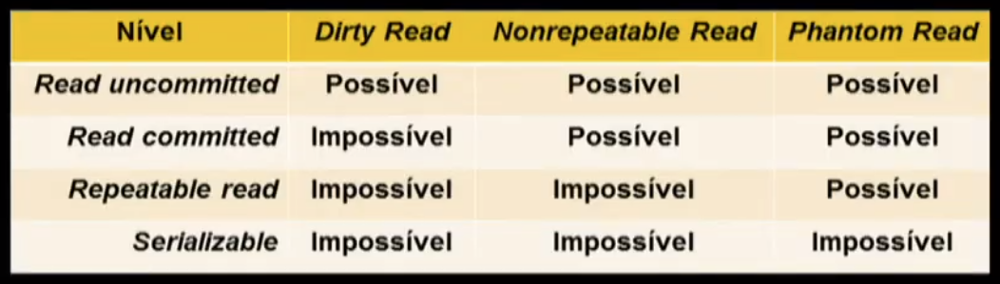

Disciplinas
-
BANCO DE DADOS-T01-2024-1 Concluído
Materiais
Vídeo 3 - Bancos de Dados - Aula 26 - Controle de concorrência – Parte II. sendProfessor ministrante: Sarajane Marques Peres.
Conteúdo
Controle de concorrência.
Controle de concorrência.
- Um sistema está em estado de deadlock se há um conjunto de transações tal que cada transação neste conjunto está esperando outra transação também contida nele.
- Seja um conjunto de transações {T1, T2, ..., Tn}.
- T1 está esperando um item de dado mantido por T2.
- Tn-1 está esperando um item de dado mantido por Tn.
- É preciso dispor de procedimentos de manuseio do deadlock.
Existem dois métodos principais para tratamento de deadlock.
Prevenção de deadlock: garante que o sistema nunca entrará em tal situação. Mais utilizado se a probabilidade do sistema entrar em deadlock for alta.
Detecção e recuperação de deadlock: permite que o sistema entre em um estado de deadlock e então o remove desse estado recuperando-o.
Prevenção: Abordagem 1.
- Obriga que cada transação bloqueie todos os itens de dados antes de sua execução.
- Ou todos os itens são bloqueados de uma só vez (a transação consegue todos os bloqueios), ou nenhum o será.
Esse esquema reduz a concorrência.
Prevenção: Abordagem 2.
- Quando uma transação T2 solicita o bloqueio que está sendo mantido pela transação T1, o bloqueio concedido a T1 pode ser revisto por meio do rollback de T1 e concedido a T2.
- Para controlar a preempção, considera-se um único timestamp para cada transação. Eles são usados para decidir se a transação esperará pelo bloqueio ou será desfeita.
- Se uma transação for desfeita, ela manterá seu timestamp original quando for reiniciada.
- Quando uma transação Ti solicita um item de dado mantido por Tj:
- se Tié mais velha (timestamp menor) do que Tj, Ti espera;
- se Tié mais nova (timestamp malor) do que TJ, Ti é desfeita (morrer).
Transações solicitantes mais VELHAS esperam!
Transações solicitantes mais NOVAS morrem!
Exemplo:
- suponha que T2, T3 e T4 tenham timestamp 5, 10 e 15 respectivamente. Se T4 solicita um item de dado mantido por T3, então T4 será desfeita.
- Quando uma transação Ti solicita um item de dado mantido por Tj:
- se Tié mais nova (timestamp maior) do que Tj, Ti espera;
- se Ti é mais velha (timestamp menor) do que TJ, Tjé desfeita (morrer).
Transações solicitantes mais NOVAS esperam!
Transações solicitantes mais VELHAS ferem/matam as mais NOVAS !
Exemplo:
- suponha que T2, T3 e T4 tenham timestamp 5, 10 e 15 respectivamente. Se T2 solicita um item de dado mantido por T3, então o item de dado será liberado por T3, que será então desfeita.
Detecção e recuperação.
Um mecanismo é evocado periodicamente para examinar o estado do sistema e determinar se um deadlock está ocorrendo.
Se um deadlock está ocorrendo, o mecanismo recupera o sistema tirando-o deste estado.
Mecanismos de detecção e recuperação precisam:- Manter informações sobre alocação corrente dos itens de dados para transações, assim como qualquer solicitação de itens de dados pendentes.
- Proporcionar um algoritmo que use essas informações para determinar se o sistema entrou em estado de deadlock.
- Recuperar-se de um deadlock quando o algoritmo de detecção determinar que ele ocorreu.
Para detecção: abordagem baseada em grafos.
- A transação T1 está esperando as transações T2 e T3.
- A transação T3 está esperando a transação T2.
- A transação T2 está esperando a transação T4.
Há um ciclo no grafo !!!! O sistema está em deadlock:
Para recuperação:- Reverter uma ou mais transações para quebrar o deadlock.
- 1. Selecionar uma transação vítima de acordo com um custo minimo.
- 2. Determinar até que ponto a transação deve ser revertida.
INANIÇÃO (STARVATION): é preciso garantir que uma transação seja escolhida como vítima somente um número finito e pequeno de vezes.
- O controle de concorrência também precisa assegurar que os esquemas de execução concorrentes permitam a execução de procedimentos de recuperação da falhas.
- Para isso, os esquemas resultantes das execuções concorrentes devem ser:
- RECUPERÁVEIS: uma transação que depende de outra (usa um dado já alterado pela outra naquele esquema de execução concorrente) não pode ser efetivada antes que a outra o seja.
- ESCALAS SEM CASCATA: uma transação usa um dado alterado por outra (naquele esquema de execução concorrente) apenas se a outra já foi efetivada.
O padrão SQL define quatro níveis de isolamento de uma transação em termos de três fenômenos que devem ser evitados:
- leitura suja (dirty read): uma transação le dados não efetivados (uncommitted) escritos por uma transação concorrente.
- leitura que não pode ser repetida (nonrepeatable read): uma transação lê uma segunda vez os dados e descobre que eles foram modificados por outra transação (que os efetivou depois de ter sido feita a leitura anterior).
- leitura fantasma (phanton read): uma transação executa uma segunda vez uma consulta que retorna um conjunto de linhas que satisfaz uma condição de busca, e descobre que o conjunto de linhas mudou devido a uma outra transação efetivada recentemente.
Níveis de Isolamento:
Controle de concorrência - Parte II.
Estes slides estão baseados na bibliografia:
- Elmasri, Ramez; Navathe, Shamkant B. Sistemas de Banco de Dados. Pearson, 6a edição, 808p., 2011.